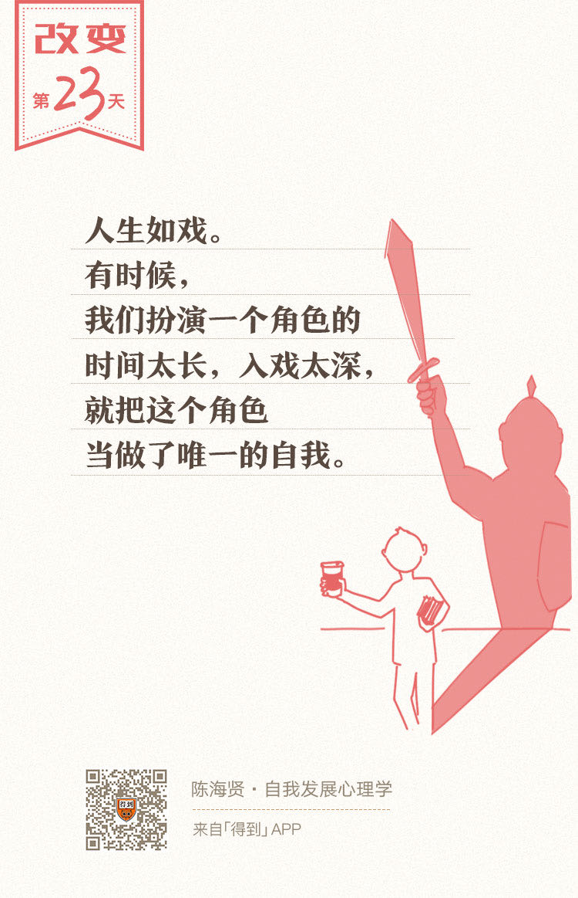

欢迎来到《自我发展心理学》。
你好，我是陈海贤。
这一章，我们换了一个看待自我的视角。我们不再从个体的角度上看，而是从关系的角度上看自我和自我发展。也许，你会有点疑惑，在关系的视角下，要怎么看自我呢？
这一讲，我想说一个非常关键的概念——角色。
角色影响我们的行为
角色这个词，最初来自戏剧，说的是演员扮演某种具有典型性格的剧中人物。
但是，我们这里所说的角色，不只是正派反派这样的角色，也不是警察囚徒或者经理主管这样的社会角色，而是一种行为期待，是关系里的人共同达成的隐性契约。这种契约是很隐秘的，如果不留心，经常会看不到。
在一段关系里，你随时随地都在面临着一些行为的期待，因此你随时随地都在扮演着某个角色。
这个角色决定了你会怎么想、怎么感受、怎么说话、怎么行动。
人生如戏，只不过有时候我们扮演一个角色的时间太长，入戏太深，就把这个角色当做了唯一的自我。
举个例子。
前段时间，一个刚毕业的学弟请教我，他要不要加入一家心理类的公司。这家公司在国内发展得不错，但是他们是做身心灵运动的，无论是宣传策划，还是课程内容，都有些神神叨叨。
我想了想就跟他说：“如果从挣钱的角度，也许可以去，但如果从专业发展的角度，还是不要了。他们挣钱的方式是通过兜售别处世界的幻想，来让我们逃离生活中真实的困难。”
真是很巧，又过了一段时间，有个记者问我，说现在社会上有很多类似身心灵的培训班，用很夸张的宣传来敛财，也有很多人受骗上当，你怎么看呢？
我想了想说：“我不知道。”
同样都是关于身心灵的，为什么我的说法会那么不一样呢？
这是因为在这两段关系中，我的角色和位置是不同的。
在第一段关系中，是学弟在问我职业规划，他期待我作为心理咨询的资深从业人员，给他一些个人发展的建议。
我接受了这样的期待，自然就会强调心理咨询的专业性。对于他，我很难说出“我不知道”，这不符合他对我的期待。
当那个记者问我这个问题的时候，她其实对我也是有一个角色期待的，她期待我扮演一个正统的、科学心理学代言人的角色。
如果我接受了这个角色，那我要说的自然也是关于身心灵运动如何不靠谱。可是我想了想，我要扮演这样一个角色吗？好像并不是那么想。
很神奇的是，当我知道自己不想扮演这个角色的时候，原来那些几乎冲口而出的话，忽然就没有了说的欲望。
我会想：我真的了解身心灵运动吗？也许并没有那么了解。
所以你看，角色就是这样，它以一种不知不觉的方式规定了你的言行思想。为什么会这样呢？当别人跟你说一件事时，他对你是有角色期待的。
这种角色期待提供了你行为的线索，让你不自觉地想去顺应这种期待。而这，常常就是影响我们的行为关键因素。
语言要求和角色期待的矛盾
我有一个来访者，她来见我，是觉得自己太没主见了，希望能够更多发表自己的看法。
怎么没主见呢？
她到公司已经一年了，公司开讨论会的时候，她经常不知道要说什么，有时候好不容易鼓起勇气要说了，结果领导就散会了。
本来这事也就这样过去了。可是前段时间，她在公司里遇到一个大姐，大姐非常热心，跟她说了一大通职场规则人生道理以后，跟她说：“你啊，我觉得你什么都好，人也很聪明，就是太不愿表现自己了。人前还是要学会说话的。”
她听了自然就说：“是是是，感谢大姐点拨。”
过了几天这个大姐又来了，又是一通指点江山激扬文字，走之前又说：“你啊什么都好，就是太不愿意表现自己了。”
她又说：“对对。”
慢慢的，她也觉得不太会表现自己是一个问题，就来咨询我。
我说：“我觉得你挺成功的啊。”
她奇怪地看我，问我哪里成功了。
我说：“你成功地扮演了一个需要指导的职场新人的角色。如果你改好了，那大姐上哪里指点江山去呢？”
她想了想说：“对对，那个大姐虽然这么说，可还是很喜欢我，每次都来跟我说话。我旁边有一个同事，人很能干，很会表现自己，大姐就非常不喜欢她，从来不跟她说话。”
这是一个很有趣的现象。
在语言上，大姐是希望她能够变得更成熟，更加善于表现自己。但是在关系中，在角色的期待上，大姐却把她固定在了一个“不会表现，需要指导”的职场新人的角色上。
显然，她也接受了大姐对她的这个角色期待，甚至还享受大姐对她的照顾。她没有意识到，正是这个角色，让她很难做出改变。
这种语言要求和角色期待上的矛盾，在日常生活中经常会发生。
我经常碰到一些很焦虑的妈妈，一边说：“老师，我的孩子太没有自主性了，我就希望他能主动做事。”另一边呢，又帮孩子把所有的事情都做好了。
她没有意识到，在角色的期待里，她已经把孩子放到了一个“没有主动性”的位置，当然孩子也把她放到了一个“什么事都有我妈呢”这样的位置。
这样，无论她在语言上怎么要求，孩子都很难发展出自主性。
调整角色的三个方法
讲到这里的时候，也许你要问，那我怎么才能调整我的角色呢？
我想说三点。
第一，在回应对方之前，你要先想想，他把你放到了一个什么样的位置和角色上，而你真的想接受这个位置和角色吗？
有时候我会遇到这样的来访者，他会跟我说：“老师遇到你真是太好了，我总算是有救了。”
他热切期盼的眼神是很受用的。这时候我就要想，我能做他的拯救者吗？如果我承担了这个角色，那他会不会觉得改变他是我的责任，所以自己就变得更无能了呢？
所以我就会这样回应：“我可当不了拯救者，但我很愿意跟你一道来看看，我们能做些什么。”
当我这么说的时候，我就把解决问题的责任又给了他。
第二，如果你和别人相处时，已经有一些不舒服了，那你就要思考，是不是我的位置或者角色有问题了。
通常这种位置角色的错位，是我们没有在自己的位置上，而是试图去替别人负责。
有一个朋友，我们叫她小A。前段时间小A来找我，说她跟大学的好朋友闹翻了，问我该怎么办。
这是这么回事呢？
小A毕业已经工作好几年了，有一个好朋友，研究生刚毕业，正在找工作，问她应该留在北京还是回家乡的城市找。
小A想了想说，当然应该留在北京了。还很热情地说，你可以先住我租的地方，慢慢找工作，等工作找好了再来找房子。
结果那个朋友找工作并不顺利，两人就开始有摩擦。看起来都是一些小事，但更深层的原因，是那个朋友对小A有怨气。
朋友想：“当时是你建议我留在北京的，现在工作不好找，都是你的错。”
小A当然没法承担这个角色。可是她的回应却是，抱怨朋友不能干，抱怨她不好好找工作，不能吃苦。
当小A这么抱怨的时候，她已经把决定朋友命运的角色放到了自己身上。言下之意：责任还是我的，只是你自己没做好，才会这样。
这就是一种角色错位，让两个人的矛盾，越陷越深。
第三，如果你对一个人有期待，不要在语言上要求他，而要像你期待他的样子那样对他。当然前提是，你要真诚地相信他有你所期待的那一面。
期待的力量是很大的。
上节课，我们讲到的美国传奇教师——马尔瓦·科林斯（ Marva Collins），通过相信孩子们能行，就把一些街头混混变成了好学生。
前段时间我跟女儿去电影院看了一个动画片，叫《大坏狐狸的故事》。
这个故事讲狐狸从鸡舍里偷了三个鸡蛋，本意是要等小鸡孵出来以后吃了它们，结果那三个小鸡一出生，就跑到狐狸跟前喊“妈妈”。
“妈妈”这种巨大的角色期待让狐狸根本没法吃它们。后来，狐狸就真的承担起来保护它们的角色，变成了它们的妈妈。这就是角色期待的神奇力量。
最后，我想谈谈角色和自我发展的关系。
我们经常说，人有很多面，要发现未知的自己。这是什么意思呢？
从关系的角度，你就能理解。因为你能在关系中扮演很多角色，所以你的自我就有了很多的可能性。
什么是个性呢？其实就是我们在关系中习惯扮演的角色。角色既是限制，也是改变的方法。
如果我们总是把自己固定在某个角色中，那么这个角色规定的言行举止就会变成你的个性。久而久之，我们就忘了自己还有的其他可能性。而我们的自我，也很难有进一步的改变和发展。
而反过来，如果我们能尝试很多不同的角色，发现自我的更多面，自我就能得到更好的发展。
总结一下，今天的课我们讲了关系中的角色。讲到了角色如何影响我们的行为，以及我们如何调整自己的角色。
其实，所有关系的沟通，都是一个隐性的角色分配过程。你有没有想过，我们要怎么识别不同的角色呢？
下一讲，我们就来思考这个问题。
如果这节课对你有帮助，也希望你能分享给你的朋友们。
我们下一讲见。
